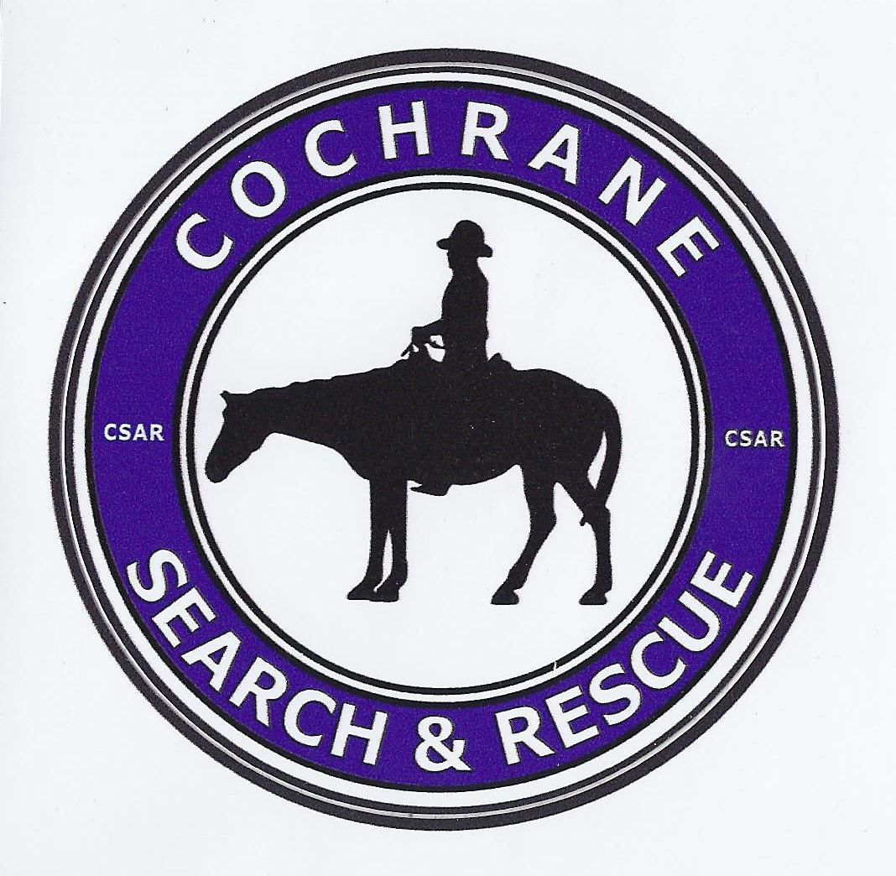

Search & rescue operations
Ground and wilderness searches, urban search, and evidence searches requested by law enforcement.
Learn about our operations
Cochrane Search and Rescue Association is a volunteer charity that supports police and emergency services with professionally trained ground search teams in Cochrane, Canmore, Kananaskis and surrounding areas.
Our team trains year-round to support the RCMP, municipal agencies and neighbouring SAR teams with safe and effective ground search and rescue operations in all seasons and terrain.
Ground and wilderness searches, urban search, and evidence searches requested by law enforcement.
Learn about our operationsRegular training in navigation, first aid, rope rescue, avalanche awareness and incident command systems.
See our training standardsPublic education, outdoor safety presentations and support at community events across the Cochrane region.
How we support the communityAs a not-for-profit charity, we rely on grants and community donations to fund training, maintain vehicles and purchase specialized equipment for rescues in the mountains and foothills.
Every search depends on reliable gear and well-trained people: radios and GPS units, medical kits, avalanche safety equipment, and our mobile command resources.
Cochrane Search and Rescue Association is a registered Canadian charity (BN 86762 2110 RR0001). Tax receipts are issued for eligible donations.
Members supply their own basic outdoor gear and commit time to meetings, training nights and callouts. In return, you gain new skills, experience and the chance to help people on their worst days.
Stories from recent searches, training nights and community events, plus updates on fundraising priorities and equipment projects.
Members spent a full weekend practicing avalanche response, winter navigation and overnight operations in cold conditions.
Read training recapLocal businesses and donors helped us upgrade radios, GPS units and medical kits used on search operations.
See how your gift helpsWe have launched a campaign to replace our aging mobile command centre, a critical resource on large searches.
View campaign details